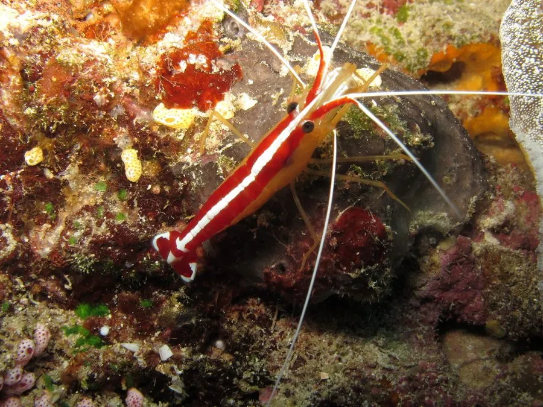

甲壳动物 · 动物界
太平洋清洁虾 Lysmata amboinensis

珊瑚礁上有名的清洁虾，白色身体带红色纵纹，为鱼类清除寄生虫和坏死组织，是水族常见的观赏虾。
- 分类
- 门节肢动物门纲软甲纲目十足目科鞭足虾科属鞭足虾属
- 栖息环境
- 印度—太平洋珊瑚礁区的清洁站和礁缝
- 地理分布
- 印度—太平洋珊瑚礁，从红海到东南亚和澳大利亚
- 保护级别
- 暂无评估；受水族贸易影响
物种志
太平洋清洁虾体长约 5–6 cm，身体白色，背部有数条鲜艳的红色纵纹，尾部和触须也是白色，触须很长，体色醒目，在海水中很容易辨认。
它生活在印度—太平洋的珊瑚礁区，常成群占据固定的清洁站，为鱼类清除体表的寄生虫、坏死组织和食物残渣。鱼类会主动游到清洁站，张开鳃盖配合清洁，双方形成互利共生关系。太平洋清洁虾是海水水族中最常见的观赏虾之一，饲养时需要注意水质和避免被大鱼捕食。它也会在珊瑚礁生态中扮演重要的清洁角色，减少鱼类寄生虫的传播，因此对珊瑚礁健康有积极作用。在野外，一个清洁站常聚集数只清洁虾，鱼类会排队等待被清洁。
形态与习性
- 食性取食鱼类体表寄生虫、坏死组织和残渣
- 体长约 5–6 cm
- 识别白色身体带红色纵纹，触须很长
- 共生为鱼类清洁，鱼类主动配合
- 水族海水水族常见观赏虾
- 分布印度—太平洋珊瑚礁区
趣味知识
- 清洁虾会为鱼类清除寄生虫，鱼类会主动张开鳃盖配合。
- 它身上红白相间的条纹非常醒目，是珊瑚礁上的熟面孔。
- 在海水水族箱里，清洁虾是很受欢迎的观赏和清洁帮手。
生态关系
- 共生 → 龙胆石斑 清洁虾为石斑鱼清除寄生虫